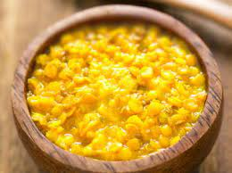

Dhal

This is what I eat everyday. And it is my favourite thing to eat. It is a dish Sri Lankan people eat everyday with rice. Now you can learn to cook it as well!
Ingredients
- 2 cups water
- 1 tablespoon oil
- ¼ teaspoon mustard seeds
- ¼ teaspoon fenugreek seeds
- ¼ teaspoon cumin seeds
- ½ onion chopped fine
- few curry leaves
- ¼ teaspoon salt
- ¼ cup milk
Steps
- Wash dhal in about 3 changes of water
- Put the dhal in a pan. Add water and turmeric and let it boil on a medium heat. Care should be taken not to cook on a high heat as dhal tends to boil over. Once the dhal is cooked, it will turn yellow in colour and will have a nice mushy content.
- Take another small fry pan. Heat the oil, fry the mustard seeds and cumin seeds and when mustard seeds, fenugreek seeds and the cumin seeds. Then add the onions and curry leaves and when the onions caramalise add this to the cooked dhal and cook over a low heat. Add salt and the milk and continue to cook for about 5 minutes and the dhal curry is ready for serving.